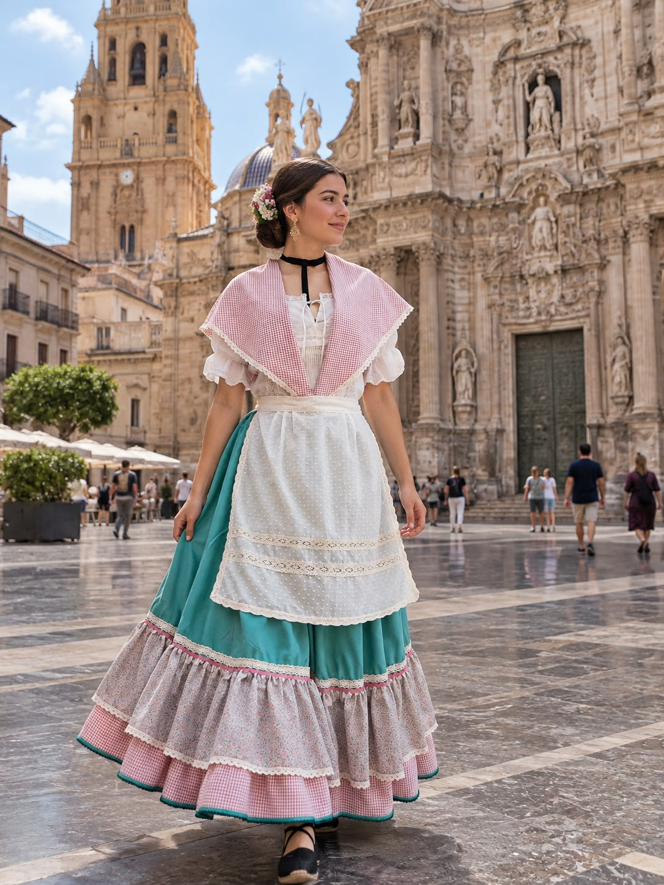
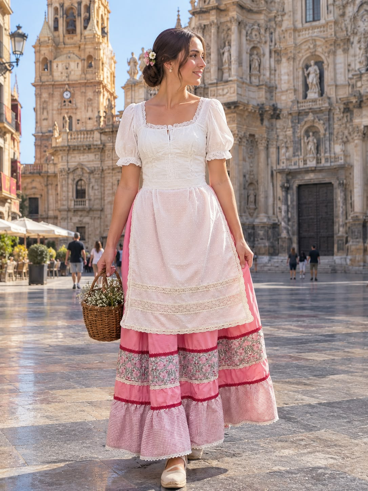
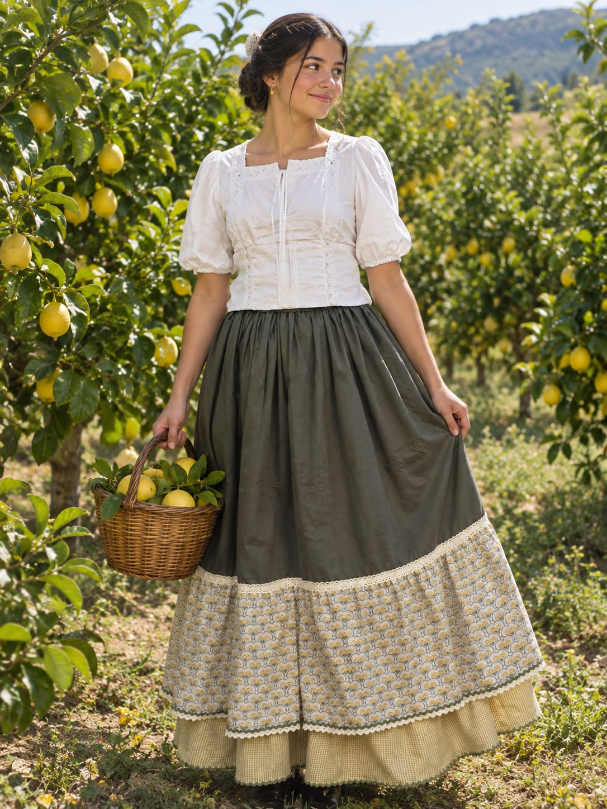
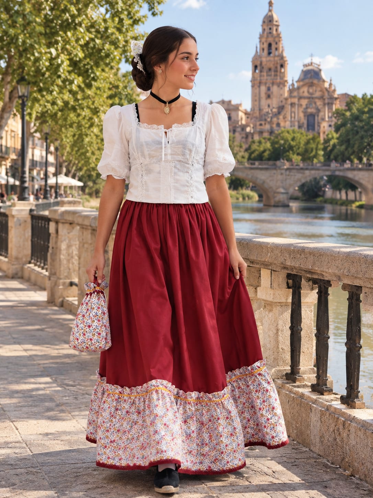

Zagalejos huertanos
Falda, mangas y delantal a medida, y colores tradicionales de la huerta murciana. Para mujer, niña y niño.
Soy modista en Sangonera La seca. Coso zagalejos bailes, vestidos para bodas y arreglos. Cada pieza se toma de tus medidas y se termina con cariño y tiempo.
Taller en Murcia. Atiendo con cita previa.
Algunos zagalejos y vestidos que he cosido.




Falda, mangas y delantal a medida, y colores tradicionales de la huerta murciana. Para mujer, niña y niño.
Vestidos de fiesta, de ceremonia y de invitada, diseñados contigo y ajustados a tu cuerpo.
Bajos, entallados y reformas. También reviso y adapto trajes de huertana que ya tienes.
Llevo 7 años cosiendo en Sangonera la Seca. Aprendí el oficio de la costura en una escuela y desde entonces me especializo en la indumentaria huertana. Me gusta que cada clienta se sienta bien con su traje y que respete la tradición.
Escríbeme y te respondo lo antes posible. Si tienes fecha de fiesta o Bando, avísame con tiempo.
Murcia · Atención con cita previa